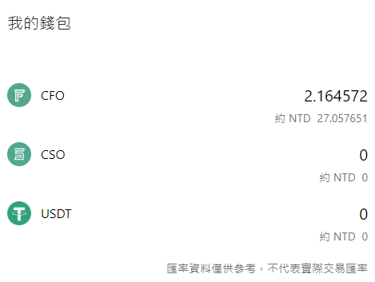
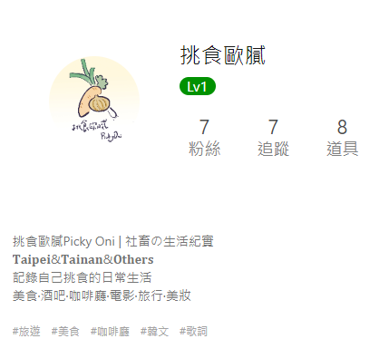

點選註冊，記得使用我的推薦碼GcUigFMhP，一起賺積分~
Potato Media 是一個 Web3.0 的共享社群平台，有些沒有接觸過區塊鏈的人可能第一次看到這個網站，會覺得有點複雜跟困惑，所以我這篇文章打算用比較簡單的方式去描述我有使用到的功能，跟實測是否真的能賺到錢。
這個網站簡單來說，我覺得可以把它當成一個論壇來使用，也可以把它當成 FB/IG 這種社交平台，因為他雖然有不同的版，但是跟論壇不一樣的是，我發現上面很多篇文章大家都篇個版來使用。
用 potato media 有什麼優點呢?
簡單來說我覺得有以下幾點:
-收益(尚在實測中)
-發表的文章會有人按讚、留言(如果你是希望你的文章有人可以互動)
-發表文章自由度高(只要有原創 200 字+圖片就可以發文)
-有訂閱的功能(如果你的文章希望是收費的，可以開訂閱)
實際上應該還有其他的優點，我只簡單敘述了我覺得比較吸引我的那幾項。
其實我從 2022 年就有註冊了，但是我發了一篇文後荒廢了一年都沒有再用，直到我從 Dcard 上面看到一篇文章，內容大致上是 potato media 的簡單介紹以及賺到多少錢。因為我會寫一些 google map 的評論，所以我決定把它撿回來用看看好了，只要將我的 google map 的評論小改一下就可以發表文章了。
那麼 是要怎麼利用 potato media 賺錢呢?
potato media 賺錢方式
簡單解釋一下，使用論壇的過程中你會按讚、留言、發文等等，在這些操作中，你可以獲得一定的積分，比方說你按讚一周內發布的一篇文章你會獲得 20 積分。
每天 potato media 會發放定量的 CFO，然後會依照你那天的積分比例分配 CFO 給你，也就是說你有積分的日子會獲得不固定量的 CFO。
CFO 是 potato media 的原生代幣，有點像是虛擬貨幣的一種，目前可以在 Pro 交易所上交易。
總結一下，就是你 使用 potato media -> 獲得積分 -> 轉成 CFO -> 提領到交易所 -> 換成其他加密貨幣提領出來
potato media 有缺點嗎?
經過上述描述，我覺得對於沒有接觸過區塊鏈的朋友來說，變現的方式不太直覺，不過或許這是個很好的機會去了解 XDD
再來就是其實你要提領出來，需要付的手續費還蠻多的(目前是 100CFO)
然後它裡面還有另一種幣是 CSO，這個部分我就沒有去了解了，初步看到的資料略顯爭議(割韭菜…)，不過由於我並沒有打算要額外花錢購買投資之類的，僅打算使用 potato media 論壇功能，所以先暫時放到一邊哈哈。
再來是如果你是個目的性很強，就想要賺到錢的話，老實說我不能保證這個平台是否會一直穩定下去(畢竟之前有很大的交易所倒閉事件)，而你賺到的 CFO 它的匯率也是浮動的，當然如果說 potato media 的未來越來越好，用戶越來越多，CFO 越來越貴，那是目前使用者樂見的。
在使用 potato media 上呢，目前 2023/07 有看到有人說目前使用者有減少的趨勢，不太確定哈哈，畢竟目前也只是使用沒多久的新手，不過也不是不能理解，因為我在首頁隨便刷，老實說有吸引到我的文章數量不多，有不少文章都蠻個版的，有點像是大家為了賺積分而簡單發的文，當然歡迎大家跟我介紹值得一看的使用者哈哈。
還有發文的部分，以前好像有可以將字變換比較多的樣子，現在只有單純的變化大小而已，覺得發文的功能可以加強一點!
實測分享
目前 2023/07/04，發了三篇文章，錢包有 2 個 CFO 接下來可能 1~2 個月會更新一下目前進度，等到有一定數量也會跟大家分享一下我會怎麼提領的!(希望這天可以趕快到) 
邀請碼
拜託各位想試試看的大大可以用我的邀請碼:GcUigFMhP，這樣你註冊時會有積分，我也會有積分，點下面圖片就可以註冊囉
主要是 potato media 有升級制度，每升一級就會解鎖一些功能，想要往上升至少要有 3 個好友使用你的邀請碼(這點好像傳銷哈哈)
其他
potato media 還有很多功能，nft、合成、戰友 blabla，但是我只有分享目前我已知的部分，其他部分可以留待大家自行挖掘^^或是之後我有發現新的東西會再來跟大家分享的~
btw,目前我打算在 potato media 上面分享的文章會以兩個面向為主，一個是韓文歌的空耳(7/10 更新，空耳歌詞分享會被官方認定為二次創作，非原創因此會被刪文 QQQ，這個平台自由度沒有我想像中的高)，另一個一樣是美食、咖啡店探訪之類的。跟這邊部落格文章不同的是，那邊分享的文章可能沒有部落格的詳細，比如說有的時候去吃的某家小店，可能只有一兩張食物照這樣，部落格會以比較詳細的分享為主。
主要是因為 google 的 SEO 的關係，因此打算這樣操作，有任何問題都可以透過網站提供的方式聯繫到我詢問哦~
最後不要忘了想一起在 potato media 耕耘的朋友可以追蹤我哦~
